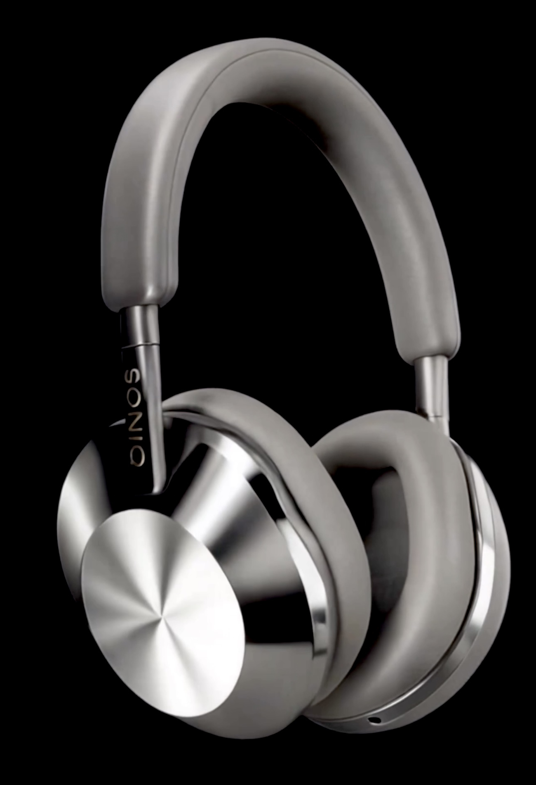

Erleben Sie den perfekten Moment.
ONE ist mehr als nur ein Kopfhörer - es ist ein Versprechen an kompromisslose Qualität, zeitloses Design und Einzigartigkeit im Klang, der Sie mit jedem Ton neu berührt.
Gefertigt für höchste Ansprüche vereint ONE:
- Kristallklare Höhen und satte Bässe für ein einzigartiges Klangbild
- Edle Materialien, das Sie sehen und fühlen können
- Ein minimalistisches Design, das Eleganz und Einzigartigkeit ausstrahlt
Tauchen Sie ein in ein einzigartiges Musikerlebnis mit ONE.